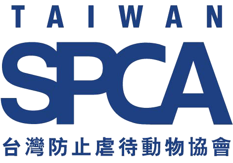
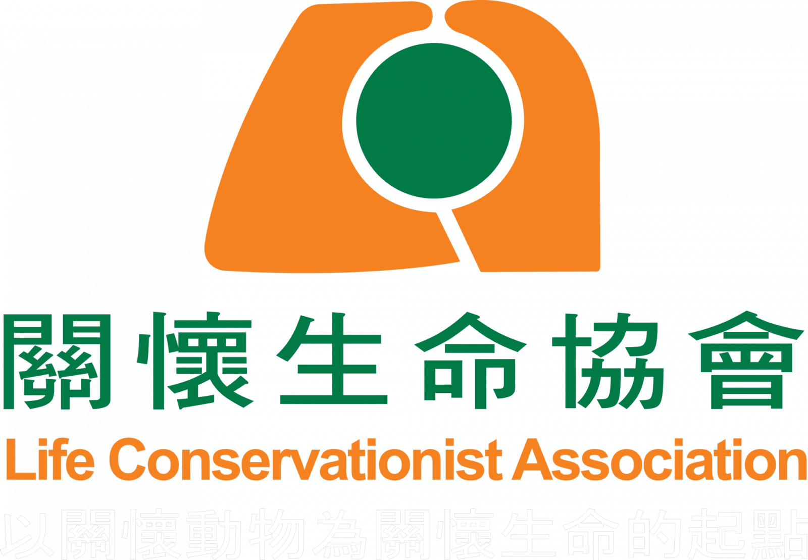
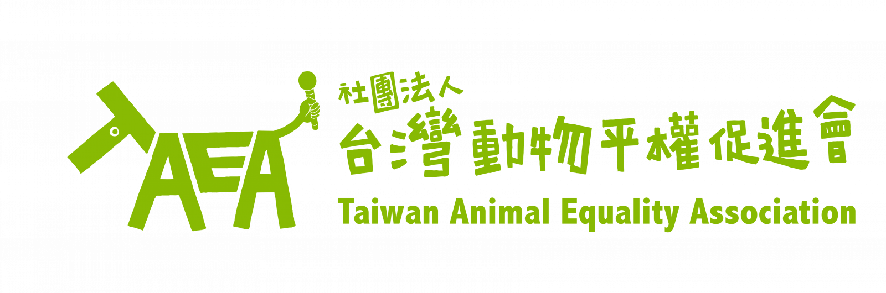

高雄市野鳥學會
高雄鳥會成立於1979年8月11日，以「欣賞、研究、保育」為宗旨，引領民眾親近大自然，認識鄉土之美，進而了解維護生態環境的重要；並針對特定地區之生態現況，加以監測和記錄，提供學術研究及生態保育之科學依據。從野生鳥類的欣賞研究，擴大到物種與棲地環境的保育、復育為目標，推動「人、鳥、環境」和諧共存的新世紀。
中華民國保護動物協會
我們是台灣歷史最悠久的動物保護團體，成立於民國49年6月4日，迄今已有60年歷史。在過去的歲月中，除致力於宣導動物保護觀念外，亦建立了保育場，從事流浪動物收容工作。並於民國87年催生「野生動物保育法」與「動物保護法」。
台灣之心愛護動物協會
以「教育、絕育，政策推廣」三者為基礎，運用創新積極的解決方案，溫柔務實地創造改變的契機，優先從問題根源處理流浪犬貓問題，並秉持開放的胸懷，逐步為生活在台灣的動物，尋找各自適合的生活方式。願景是有一天，台灣成為人與動物和平共存的土地。
台灣防止虐待動物協會

透過一切合法方式，在國內倡導以仁慈對待動物，讓動物虐待不再發生，並減輕動物所遭受的痛苦折磨。
中華民國關懷生命協會

以關懷動物為關懷生命的起點。基於「眾生平等」之信念，以提倡動物權、為動物爭取福利，保育野生動物與維護生態平衡為宗旨。透過立法、教育及各項適時行動，以拯救動物免於囚禁、虐待、遺棄、傷害、殘殺或滅種的悲慘命運。生命是依著自我的習性生活在自由的領域中，這其中沒有誰主宰誰，或誰是誰的「主人」。
台灣懷生相信動物協會
誘捕街頭浪犬絕育是我們的專業！ 地毯式家戶訪查找出未絕育母犬是我們的堅持！ 盼透過「高強度絕育計畫」達到浪犬減量是我們的宗旨！ 我們目前在北北基桃全力執行「遊蕩犬高強度絕育計畫」，秉持著「系統化與科學化」的態度，希冀持續擴張、最終達成全台遊蕩犬減量。
台灣動物平權促進會

動平會不斷為動物行動與發聲，透過動物平權教育，讓每個人都能站在動物的立場設想，喚起我們的同情共感。我們關注動物權益，也就是平等地尊重動物的生命，而動物有不被奴役及不被傷害的權利，不被當成工具使用。
台灣動物緊急救援推廣協會
台灣動物緊急救援小組堅信，唯有透過生命教育，才能改善台灣流浪動物的問題；也期盼更多與我們有著相同理念的社會大眾能持續支持我們，讓台灣的流浪貓狗能有更美好的明天。